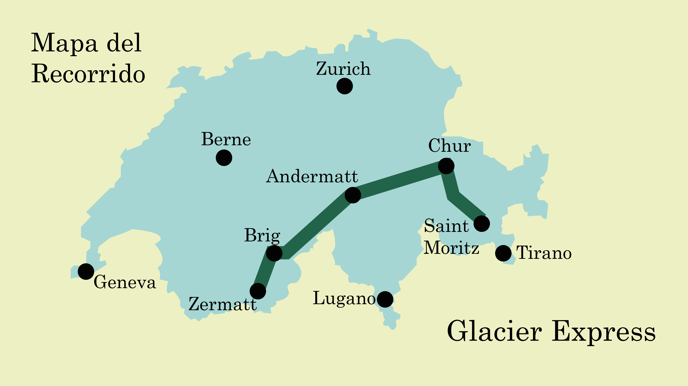
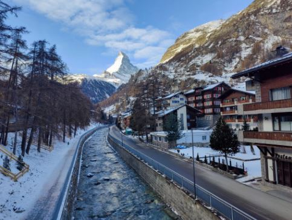
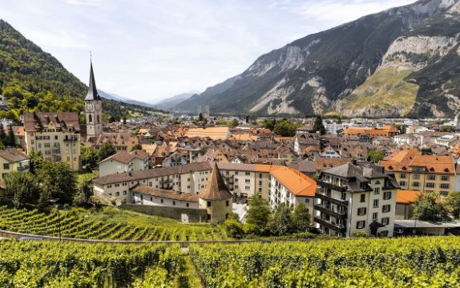

Explora las ciudades principales del recorrido.


🏔️ Ciudad alpina famosa por el Matterhorn.
🚂 Punto de inicio o final del Glacier Express.
✨ Uno de los destinos más visitados de Suiza.
🚉 Importante centro ferroviario de Suiza.
🏛️ Destaca por su patrimonio histórico.
🌄 Rodeada de impresionantes paisajes alpinos.

🏘️ Considerada la ciudad más antigua de Suiza.
🚂 Parada importante del Glacier Express.
🌲 Rodeada por montañas y naturaleza.
⛷️ Famosa por sus deportes de invierno.
🏔️ Destino turístico de lujo reconocido mundialmente.
🚂 Punto final o inicial del recorrido.